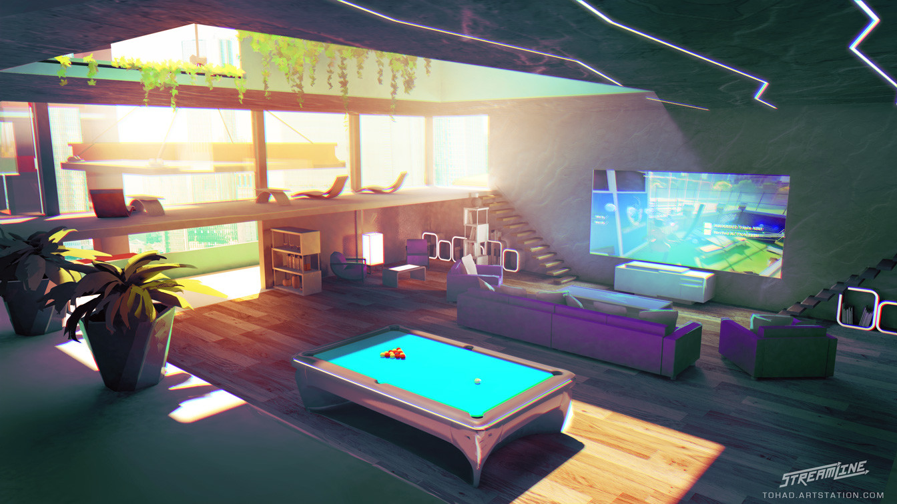
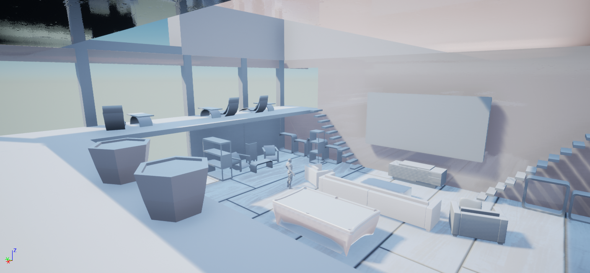
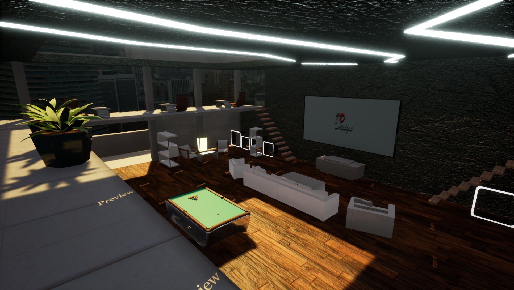
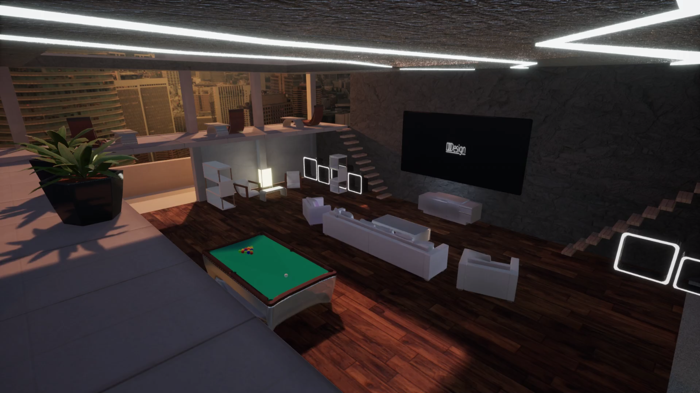

I started with a concept art (see image above) where I was looking for an interesting light and room layout.
Art comes from Proletariat Inc. from they're game Streamline.
Having in mind doing this scene in Unreal, a modern look & realistic look and had assets with interesting materials were the criteria
that I had in mind for the background theme for my Website.
The scene from the concept art had everything in it, plus with spaces
where I could put my own stuff in there.

The Blockout phase was quickly done. Some of the models were a good challenge for me, but that's what I've needed to get
a better workaround with 3D Modeling, as I want to get better with it.

The first asset complete build. Since Unreal was relatively new to me, creating these different materials and set them
up in the scene on the models and see how they interact with the lighting. Not gonna lie I had a blast when I made the
material for the stone wall.
The gallery and the room where the computer is, not seen on the image, were stuff I added to the scene
because I haven't figured out what I could use as a fitting background for the About Me and Contacts section for the
website.
The logo on the TV screen is from the old site style. The video played automatically when in play mode, only thing missing and
make it more believable was the light that would emit from the screen. Trying to animate the color of the light didn't work.
A different approach was to code the light colors. Luckily I found a good tutorial which helped me out. That was a first coding
in Unreal for a project, it's very different from what I am used to. Likely gonna use more coding in future projects.

All must-have assets are in scene, lighting and post-processing had it's final touches. It's done...for now.
The scene itself is complete, but it will have some "live" into it. There are still some empty spaces, also notice
the empty shelves, these will be filled with models.
I'll see the models as kind of "easter eggs" as I choose to put
models in scene that reference to the portfolio pieces and high likely some of my favorite pieces from modeling. But that
is for the future.